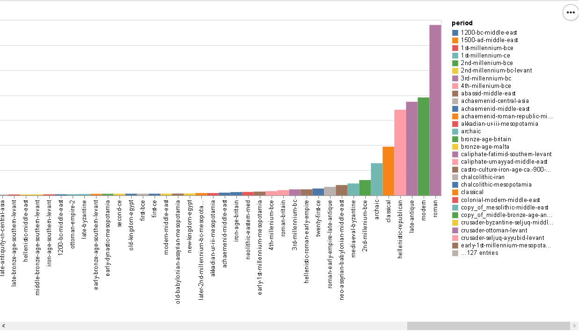
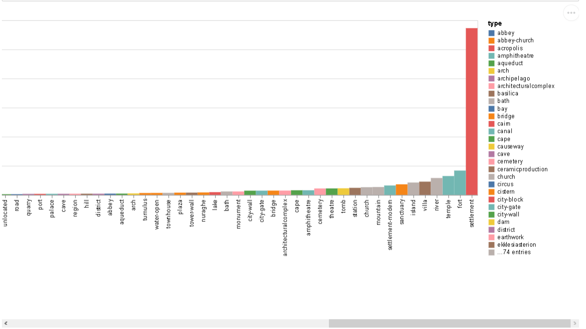
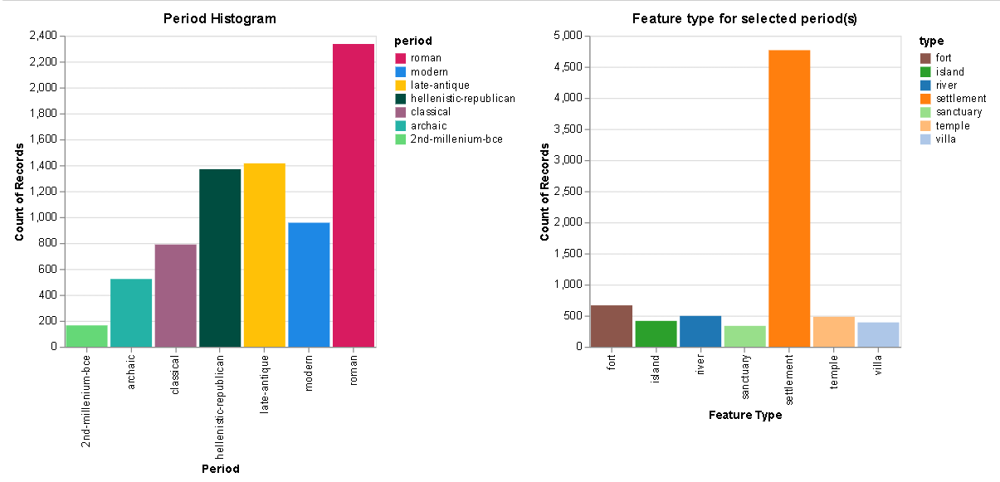
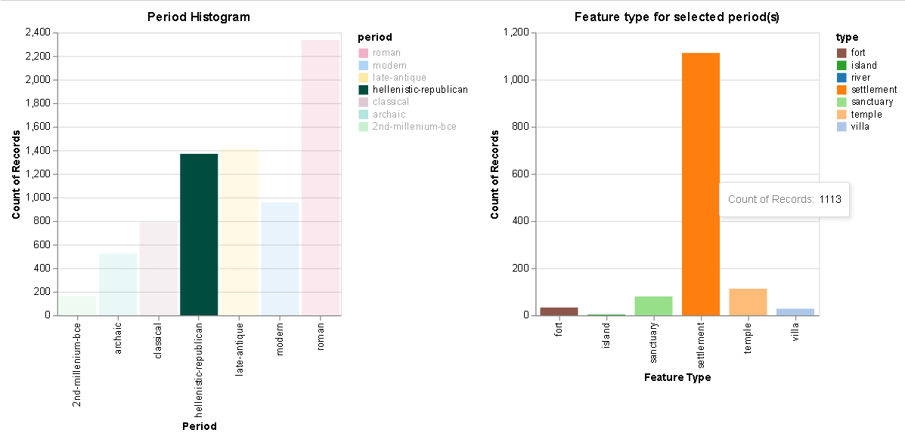

Author: Perikleous Michalis (985936)
period that occur much more frequently in the dataset. It also shows the count of locations of top seven type of locations the occur much more frequently in the dataset, for each of these period.import altair as alt import vega_datasets as data import pandas as pd import numpy as np locations = pd.read_csv('pleiades-locations.csv') alt.data_transformers.disable_max_rows() #Data preparation: Match each period with the type based on order they are inserted #Remove locations that with missing information, either from timePeriodsKeys or featureType locations['timePeriodsKeys'] = locations['timePeriodsKeys'].str.replace(' ','') locations['featureType'] = locations['featureType'].str.replace('-2','') locations.dropna(subset=['timePeriodsKeys'],inplace=True) locations = locations[locations.featureType != 'unknown'] locations = locations[locations.featureType != 'unknown,'] #Split timePeriodsKeys column to several columns separating the periods, #and keep the first 4 periods of the location periodIndex = [locations.id,locations.featureType] period_df = pd.DataFrame(pd.DataFrame(locations.timePeriodsKeys.str.split(',').tolist(), index=periodIndex)).dropna(thresh=800,axis='columns') #Reformat column indexes period_df.reset_index(inplace=True) period_df.columns = ['id', 'featureType','period1','period2','period3','period4'] #Further removing of missing information period_df = period_df[period_df.featureType != ''] period_df = period_df.dropna(subset=['featureType']) #Split featureType column to several columns separating type, #and keep first 4 types of the location period_feature_index = [period_df.id,period_df.period1,period_df.period2, period_df.period3,period_df.period4] period_feature_df = pd.DataFrame(pd.DataFrame(period_df.featureType.str.split(',').tolist(), index=period_feature_index).dropna(thresh=10,axis='columns')) #Reformat column indexes period_feature_df.reset_index(inplace=True) period_feature_df.columns = ['id','period1','period2','period3','period4', 'type1','type2','type3','type4'] #Create a numpy array from the dataframe(general bad practise but here is uselful) arr = np.array(period_feature_df,dtype=str) for i in range(arr.shape[0]): for j in range(5,9): if arr[i][j] in ["","None","nan"]: arr[i][j] = "nan" for k in range(j,9): if(arr[i][k-4] != "nan"): arr[i][k] = arr[i][j-1] #Create array list to create combination of period and type columns arr_list = [] for i in range(arr.shape[0]): for j in range(1,5): if arr[i][j] != "nan": arr_list.append([arr[i][0],arr[i][j],arr[i][j+4]]) #Create new dataframe from our array with correct split of period and type for each period #(based on comma seperate ordering) final_df = pd.DataFrame(arr_list) final_df.columns = ['id','period','type'] #Find the 7 periods that occur more often in the dataset top7Periods = final_df['period'].value_counts().keys()[0:7] #Find the 7 types that occur more often in the dataset top7Types = final_df['type'].value_counts().keys()[0:7] #Filter the dataset based on the top 7 periods and types top7_df = final_df[final_df['period'].isin(top7Periods)] top7_df = top7_df[top7_df['type'].isin(top7Types)]
In the following bar charts we created two histograms. The first one using all distinct period values we have in the dataset, and the second one using all distinct type values from the dataset. To produce our visualizations we used final_df dataframe that is the dataset after data preprocessing phase.
#All periods histogram period_hist = alt.Chart(final_df).mark_bar(size=20).encode( x = alt.X("period:N",title='Period',sort ='y'), y = alt.Y('count(period):Q'), color='period:N', tooltip=['count()'] ).properties( title="Period Histogram") period_hist

#All types histogram type_hist = alt.Chart(final_df).mark_bar(size=20).encode( x = alt.X('type:N',title='Feature Type',sort ='y'), y = alt.Y('count(type):Q'), color=alt.Color('type:N'), tooltip=['count()'] ).properties( title="Feature type for selected period(s)" ) type_hist

To produce our visualizations we used top7_df dataframe that is the dataset that contains only the top seven period and type.
selection = alt.selection_multi(fields=['period'], bind='legend') #period histogram period_hist = alt.Chart(top7_df).mark_bar(size=40).encode( x = alt.X("period:N",title='Period'), y = alt.Y('count(period):Q'), color=alt.Color('period:N',scale=alt.Scale( domain=['roman', 'modern', 'late-antique', 'hellenistic-republican','classical', 'archaic', '2nd-millenium-bce'], range=['#D81B60', '#1E88E5' ,'#FFC107', '#004D40', '#A06184', '#24B2A6', '#65D877'])), opacity=alt.condition(selection, alt.OpacityValue(1), alt.OpacityValue(0.1)), tooltip=['count()'] ).properties( title="Period Histogram", width=300).add_selection( selection) #type histogram type_hist = alt.Chart(top7_df).mark_bar(size=40).encode( x = alt.X('type:N',title='Feature Type'), y = alt.Y('count(type):Q'), color=alt.Color('type:N', scale=alt.Scale( domain=['fort', 'island', 'river', 'settlement','sanctuary', 'temple', 'villa'], range=['#8c564b', '#2ca02c' ,'#1f77b4', '#ff7f0e', '#98df8a', '#ffbb78', '#aec7e8'])), tooltip=['count()'] ).properties( title="Feature type for selected period(s)", width=300, ).transform_filter( selection).interactive() alt.hconcat(period_hist, type_hist).resolve_scale( color='independent' )


| All Periods Chart | All Types Chart | Top Seven First | Top Seven Second | |
|---|---|---|---|---|
| x | period categories | type categories | period categories | type categories |
| y | count of locations | count of locations | count of locations | count of locations |
| color | period categories | type categories | period categories | type categories |
| tootip | count of locations | count of locations | count of locations | count of locations |